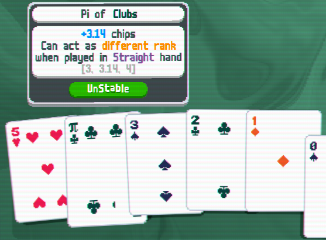
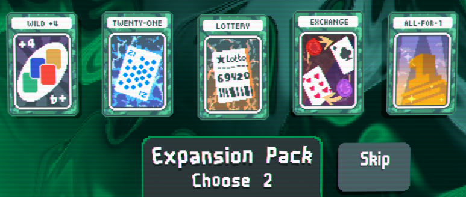
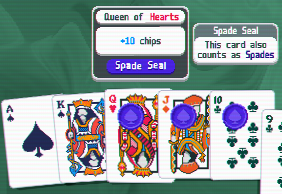

Inspired by other card and board games, both physical and digital alike.
This mod brings a lot of new, wacky content and mechanics into Balatro that
fit right into its vanilla-type aesthetic and gameplay!
Download Link
Download How to Install
Please note that this mod is designed and balanced to be played as a standalone mod.
It is possible to play it with other mods, but it is not completely balanced for it.
If you are playing it with other mods, please get the UnStableEX expansion as well for cross-mod compatibility.
If there are any future plans to add cross-mod content for fun, it will be added there as well.
Features
- 75 New Jokers
- 8 New Ranks to discover during gameplay
- New Consumable Type: Auxiliary Card
- Suit and Face Seal
- 5 new Enhancements
- 3 new Unhancements: Enhancements that have negative effects
- 5 Tarot and 9 Spectral Cards for supporting all new features
Decimal Ranks

Decimal ranks can act as different multiple ranks in Straight-based hands.
(Only one rank at a time - this means it is not possible to play
two 0.5 rank cards in one hand and make one act as 0 and one as 1.)
Auxiliary Card

A new Consumable Type focused mostly on new features.
Grab them from the booster pack directly to your consumable area,
and use them inside a round for a chance to turn the tide in your favor.
It is generally powerful, but it requires an open consumable slot to pick up.
Suit and Face Seals

Cards with the Suit Seal are multiple suits at once.
Cards with the Face Seal are considered face cards.
However, they are affected by Boss Blind
effects as well, so use them with caution!
Note that this does not grant any second triggers if the card has the
same suit as the suit seal, or if a face seal is put on a face card.
Full Additions List
Please note that this may contain spoilers.
View Full Additions
Credits
UnStable Mod Concept: Kirbio and RamChops Games
Programming, Art, and Music: Kirbio
Beta Tester: RamChops Games, Doremy
Proofreading: GizmoTheDragon
Additional SFX from Kurage Kosho
Balatro Website Template: notmario
A lot of code snippets are based on other existing Balatro mods.
(eg: Bunco, MoreFluff,
Ortalab, etc.)
Please consider checking them all out as well!